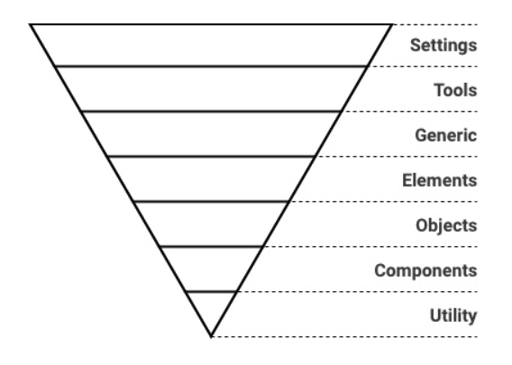
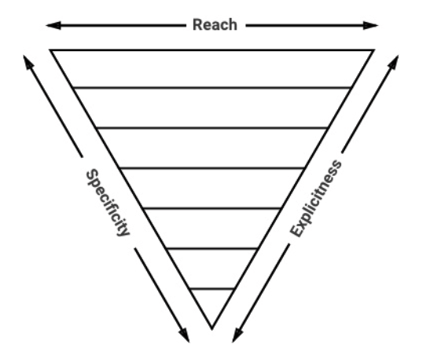
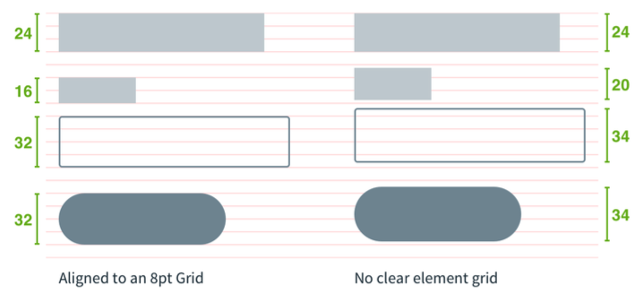
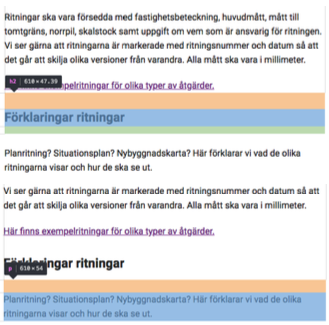
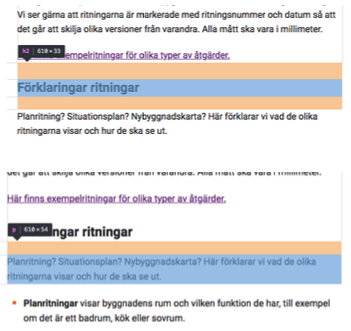

Table of contents
- Table of contents
- Summary
- Filestructure/Layers
- Layers
- Inverted triangle
- 8-point Grid
- Naming convention: BEM
- BEM - Guidelines
- BEM - Elements
- BEM - Modifiers
- Introducing Namespaces BEM + ITCSS = BEMIT
- Namespaces
- BEMIT: Example
- BEMIT Guidelines
- 8-point Grid Guidlines
- Use margins when spacing inline elements, avoid padding
- REM vs PX
- Utilities – Margin/Padding
Summary
eslint:recommended
Standard : BEM
Filestructure/Layers
Based on ITCSS

Layers
Settings
Globally used variables like colors, font, sizing etc. This layer do not output any css.
Tools
Globally used mixins and functions. This layer do not output any css.
Generic
Reset and/or normalize styles, box-sizing definition, etc. First layer which generates actual CSS.
Elements
Styling for bare HTML elements (like H1, A, etc.). These come with default styling from the browser so we can redefine them here.
Objects
Abstract styles (animation, box-shadow, layout, containers etc) that can be re-used across the project. Objects should in general never be modified as they effect a wide range of UI components.
Components
Specific UI components (like button, navigation, footer etc). This is where majority of our work takes place and our UI components are often composed of Objects and Components.
Utility
Utilities and helper classes with ability to override anything which goes before in the triangle, eg. hide helper class
Inverted triangle

8-point Grid
 Picture borrowed from: https://builttoadapt.io/intro-to-the-8-point-grid-system-d2573cde8632
Naming convention: BEM
- All classes can be categorized as either a block, element or modifier
- Syntax: .block__element—modifier
- Block - Standalone entity that is meaningful on its own.
- Element - A part of a block that has no standalone meaning and is semantically tied to its block.
- Modifier - A flag on a block or element. Use them to change appearance or behavior.
- http://getbem.com/introduction/
BEM - Guidelines
- A block can contain other blocks
- Explains relationship between styles
- Modularize styles to keep it DRY
BEM - Elements
Don’t
<div class=”card”>
<div class=”card__body”>
<h4 class=”card__body__title”>Title</h4>
</div>
</div>
Do
<div class=”card”>
<div class=”card__body”>
<h4 class=”card__title”>Title</h4>
</div>
</div>
BEM - Modifiers
Do
<div class=”card card--blue”>
<div class=”card__body”>
<h4 class=”card__title”>Title</h4>
</div>
</div>
Do
<div class=”card”>
<div class=”card__body”>
<h4 class=”card__title card__title--blue”>Title</h4>
</div>
</div>
Introducing Namespaces BEM + ITCSS = BEMIT
BEM:
.block__element—modifier
BEM w/ Namespaces:
.namespace-block__element–modifier {}
BEM w/ Namespaces & Responsive Suffixes:
.namespace-block__element–modifier\@suffix {}
Namespaces
o-, Object
.o-object-name[<element>|<modifier>] {}
c-, Component
.c-component-name[<element>|<modifier>] {}
u-, Utility
.u-utility-name {}
t-, Theme
.t-theme-name {}
s-, Scope
.s-scope-name {}
is-,has-, State
.[is|has]-state {}
_ , Hack
._<namespace>hack-name {}
js-, Javascript
.js-component-name {}
Responsive suffixes
.o-object-name\@breakpoint {} .u-utility-name\@print {}
BEMIT: Example
<header class="c-header c-header—transparent js-sticky-target is-sticky">
<div class="o-container o-container—fullwidth">
<a class="c-header__logo" href="/home.html">
<img class="o-media" src="/logo.png">
</a>
<nav class="u-hidden@mobile">
<ul class="c-menu">
<li class="c-menu__item">
<a class="c-menu__link" href="/page-1.html">Page 1</a>
</li>
<li class="c-menu__item is-current">
<a class="c-menu__link" href="/page-2.html">Page 2</a>
</li>
<li class="c-menu__item">
<a class="c-menu__link" href="/page-3.html">Page 3</a>
</li>
</ul>
</nav>
</div>
</header>
BEMIT Guidelines
- Don’t combine two components together eg.
<div class=”c-card c-box”></div> - Components can be buildt with Objects eg.
<div class=”c-card o-box”></div> - Always build components first - if another component has styles you need, create an objects with those styles and extend (
@extend .o-object) or add it to the mark-up. - Don’t edit styles of objects because they effect a wide range of components
8-point Grid Guidlines
- divisible by 8 eg. 8px, 16px, 24px, 48px, 0.5rem (8px), 1rem (16px), 1.5rem (24px), 2rem (32px)
- 4px can also be used - but should be avoided
- Mainly used for spacing (margins/padding)
- Line-heights, widths, heights & typography - if possible but not necessary
Use margins when spacing inline elements, avoid padding
Don’t

Do

REM
- Typography within content/article or other content that is primary for the page ‘ Margin/Padding on elements with REM as font-size
PX
- Layout
- Fixed Typography (typography that does not scale with root font-size eg. certain components like buttons etc)
EM
- Media queries
- Padding/Margin (avoid if possible)
REM vs PX

Utilities – Margin/Padding
* Properties: ’m’ for margin ’p’ for padding
* Sides: left (l), right (r), top (t), bottom (b), horizontal (x), vertical (y), none (all sides)
* Sizes: 0, 1, 2, 3, 4, 5, 6, 7, 8, 9 where 0 equals to 0 padding/margin
* Screens: all screen (blank), xs screens (@xs), lg screens (@lg) etc
#### Margin
```SCSS
.u-mt-0 {
margin-top: 0px !important;
}
.u-mx-0 {
margin-left: 0px !important;
margin-right: 0px !important;
}
.u-m-0 {
margin: 0px !important;
}
Padding
.u-pt-0 {
padding: 0px !important;
}
.u-px-0 {
padding-left: 0px !important;
padding-right: 0px !important;
}
.u-p-0\@lg {
@media all and screen (min-width: 100em) {
}
}